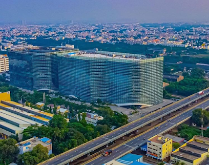
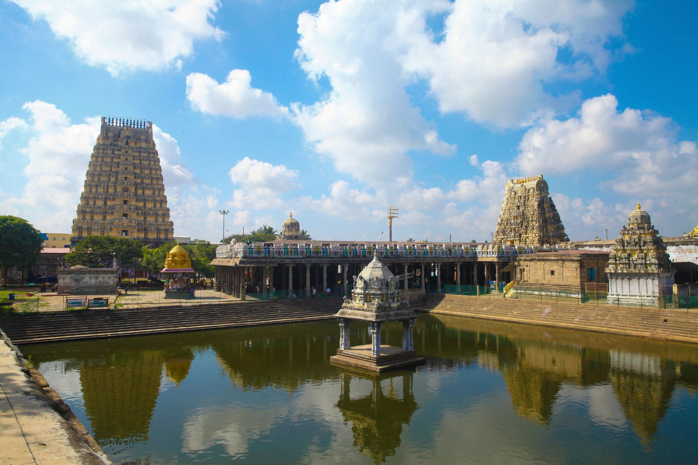
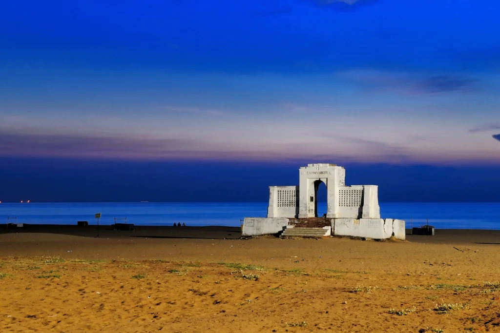

Rameshwaram
Rameswaram (also transliterated as Ramesvaram, Rameshwaram) is a municipality in the Ramanathapuram district of the Indian state of Tamil Nadu. It is on Pamban Island separated from mainland India by the Pamban channel and is about 40 kilometres (25 mi) from Mannar Island, Sri Lanka. It is in the Gulf of Mannar, at the tip of the Indian peninsula.
click here

Dhanushkodi
Dhanushkodi is an abandoned town at the south-eastern tip of Pamban Island of the state of Tamil Nadu in India.It is south-east of Pamban and is about 24 kilometres west of Talaimannar in Sri Lanka. The town was destroyed during the 1964 Rameswaram cyclone and remains uninhabited in the aftermath. Although devoid of inhabitants, Dhanushkodi remains a tourist attraction due to its historical and mythological relevance.
click here

Kanyakumari
t is the southernmost tip of the Indian subcontinent and the southernmost city in mainland India, and thus referred to as "The Land's End". The city is situated 90 kilometres south of Thiruvananthapuram city, and about 20 kilometres south of Nagercoil, the headquarters of Kanyakumari district.
click here

Kodaikanal
Kodaikanal is a hill town in the southern Indian state of Tamil Nadu. It’s set in an area of granite cliffs, forested valleys, lakes, waterfalls and grassy hills. At 2,000 meters above sea level, the town centers around man-made, star-shaped Kodaikanal Lake, bordered by evergreen forest. Rowing boats can be hired, and hikers and cyclists follow the 5k Lake Road path around the shore.
click here

Madurai
Madurai is an energetic, ancient city on the Vaigai River in the South Indian state of Tamil Nadu. Its skyline is dominated by the 14 colorful gopurams (gateway towers) of Meenakshi Amman Temple. Covered in bright carvings of Hindu gods, the Dravidian-style temple is a major pilgrimage site. Millions attend the processions and ceremonies of April's Chithirai Festival celebrating Meenakshi and Lord Vishnu.
click here

Chennai(Madras)
Chennai, on the Bay of Bengal in eastern India, is the capital of the state of Tamil Nadu. The city is home to Fort St. George, built in 1644 and now a museum showcasing the city’s roots as a British military garrison and East India Company trading outpost, when it was called Madras. Religious sites include Kapaleeshwarar Temple, adorned with carved and painted gods, and St. Mary’s, a 17th-century Anglican church
click here

Kanchipuram
Kanchipuram, also known as Kanchi, is an ancient city in southern India’s Tamil Nadu state. Considered a holy pilgrimage site by Hindus, it is home to many temples. The 8th-century Kailasanathar Temple, dedicated to Lord Shiva, is a vast complex with intricate sandstone carvings. Ulagalanda Perumal Temple houses a huge statue of Lord Vishnu. A mango tree in the Ekambareswarar Temple courtyard is thought to be sacred
click here

Marina Beach
Marina Beach, or simply the Marina, is a natural urban beach in Chennai, Tamil Nadu, India, along the Bay of Bengal. The beach runs from near Fort St. George in the north to Foreshore Estate in the south, a distance of 6.0 km, making it the second longest urban beach in the world, after Cox's Bazar Beach.
click here

Isha Coimbatore
The Adiyogi Shiva bust is a 34-metre tall (112 ft), 45-metre long (147 ft) and 25-metre wide (82 ft) steel bust of Shiva with Thirunamam at Coimbatore, Tamil Nadu. It is recognized by the Guinness World Records as the "Largest Bust Sculpture” in the world.[1][2] Designed by Sadhguru, the founder and head of the Isha Foundation, the statue weighs around 500 tonnes (490 long tons; 550 short tons).[3]
Adiyogi refers to Shiva (Shankara) as the first yogi.[4] It was established to inspire people towards inner well-being through yoga.
"This face is not a deity or temple, this is an iconic inspiration. In pursuit of the divine, you don't have to look up because it is not somewhere else. Each of the 112 possibilities is a method to experience the divine within you. You just have to pick one. [...] The idea is not to build one more monument but to use it as a galvanizing force towards self-transformation."
Sadhguru on the purpose of the statue.Adiyogi is located at the Isha Yoga Centre. Its height, 112 ft, symbolizes the 112 possibilities to attain to moksha (liberation) that are mentioned in yogic culture, and also the 112 chakras in the human system.A linga named Yogeshwar Linga was consecrated and placed in front of the statue.The Indian Ministry of Tourism has included the statue in its official Incredible India tourism campaign.It is also the venue of a light and sound show about Shiva as a yogi, inaugurated by the President of India, Ram Nath Kovind.
click here